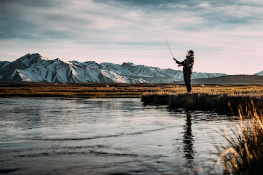

An Outdoorsman's Paradise
From mountains and world-class fishing in the north to island hopping and the rolling countryside in the south to Allemansrätten all over, Sweden is the perfect bucketlist destination for outdoor lovers.
